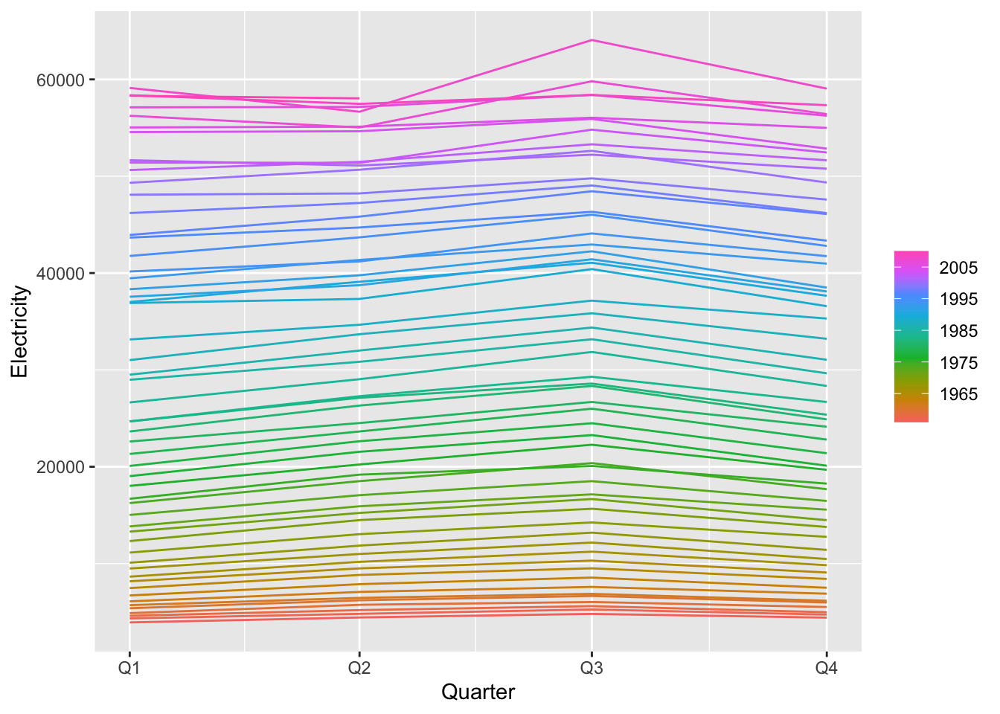
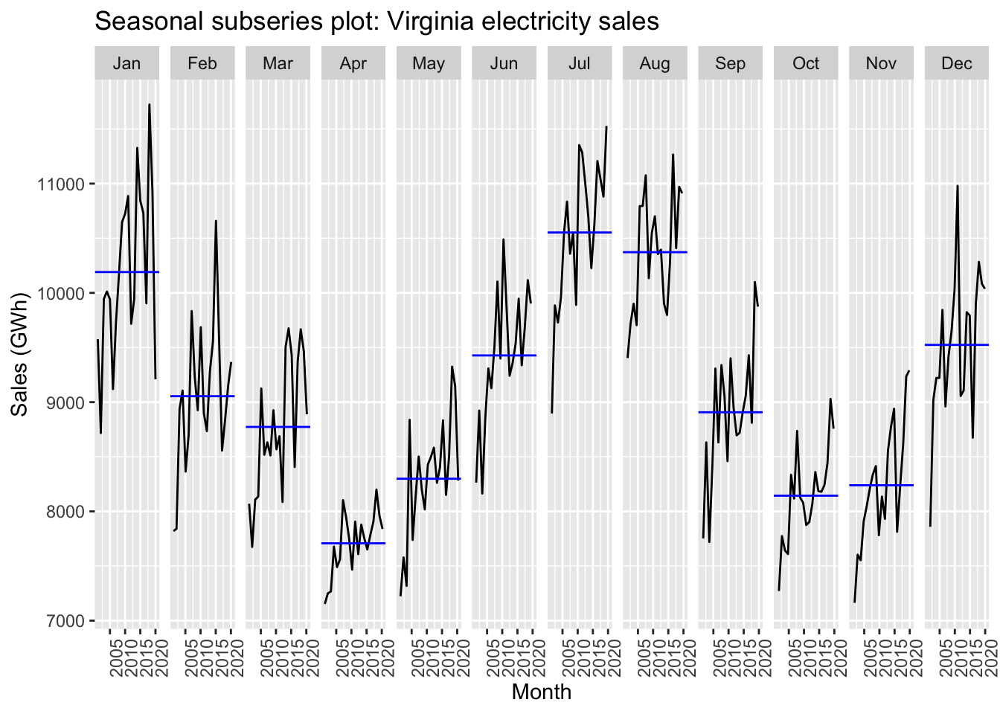

Chapter 15 Exploratory analysis of time series data
15.1 Overview
Readings:
- FPP3, Sections 2.2–2.6.
- TSDS, Section 3.10, Chapter 4 and Section 5.5
Topics:
- Time series plots.
- Trends. Seasonal (periodic) patterns. Cycles.
- Seasonal plots. Seasonal sub-series.
- Investigating relationships between two variables. Scatterplots. Correlation. Scatterplot matrices.
Assignment: Explore your data.
15.2 Briefly characterize the dataset
Provide a brief example of the data, showing how they are structured.
Example: Monthly electricity sales for Virginia
Previously we extracted monthly electricity sales data for Virginia from a remote database, converted the data frame into a tibble object, and saved the result to a file in feather format.
library(arrow)
esales <- read_feather("data/esales.feather")print(esales) # print the data as a table## # A tibble: 233 × 4
## value date year month
## <dbl> <date> <int> <int>
## 1 8282. 2020-05-01 2020 5
## 2 7839. 2020-04-01 2020 4
## 3 8889. 2020-03-01 2020 3
## 4 9368. 2020-02-01 2020 2
## 5 9209. 2020-01-01 2020 1
## 6 10038. 2019-12-01 2019 12
## 7 9291. 2019-11-01 2019 11
## 8 8757. 2019-10-01 2019 10
## 9 9874. 2019-09-01 2019 9
## 10 10912. 2019-08-01 2019 8
## # … with 223 more rowssummary(esales) # compute basic summary statistics about the data## value date year month
## Min. : 7153 Min. :2001-01-01 Min. :2001 Min. : 1.000
## 1st Qu.: 8200 1st Qu.:2005-11-01 1st Qu.:2005 1st Qu.: 3.000
## Median : 9019 Median :2010-09-01 Median :2010 Median : 6.000
## Mean : 9093 Mean :2010-08-31 Mean :2010 Mean : 6.425
## 3rd Qu.: 9885 3rd Qu.:2015-07-01 3rd Qu.:2015 3rd Qu.: 9.000
## Max. :11724 Max. :2020-05-01 Max. :2020 Max. :12.000boxplot(esales)
hist(esales$value, breaks=40) # Make a histogram of monthly sales
15.2.1 Examine subsets of the data
# References: https://www.tidyverse.org/, https://dplyr.tidyverse.org/
# filter(data object, condition) : syntax for filter() command
esales %>%
filter(year == 2019) %>%
filter(value > 9000) %>%
print()
(esales %>%
group_by(year) %>%
summarise(Total = sum(value)) -> total_esales_by_year)
esales %>%
mutate(sales_TWh = value/1000) %>%
dplyr::select(-value)# library(lubridate) # Make it easy to deal with dates
esales %>% filter(month==3) # These three lines of code## # A tibble: 20 × 4
## value date year month
## <dbl> <date> <int> <int>
## 1 8889. 2020-03-01 2020 3
## 2 9466. 2019-03-01 2019 3
## 3 9666. 2018-03-01 2018 3
## 4 9372. 2017-03-01 2017 3
## 5 8406. 2016-03-01 2016 3
## 6 9435. 2015-03-01 2015 3
## 7 9676. 2014-03-01 2014 3
## 8 9506. 2013-03-01 2013 3
## 9 8086. 2012-03-01 2012 3
## 10 8688. 2011-03-01 2011 3
## 11 8568. 2010-03-01 2010 3
## 12 8926. 2009-03-01 2009 3
## 13 8512. 2008-03-01 2008 3
## 14 8632. 2007-03-01 2007 3
## 15 8519. 2006-03-01 2006 3
## 16 9125. 2005-03-01 2005 3
## 17 8136. 2004-03-01 2004 3
## 18 8108. 2003-03-01 2003 3
## 19 7675. 2002-03-01 2002 3
## 20 8070. 2001-03-01 2001 3esales %>% filter(month(date)==3) # all do## # A tibble: 20 × 4
## value date year month
## <dbl> <date> <int> <int>
## 1 8889. 2020-03-01 2020 3
## 2 9466. 2019-03-01 2019 3
## 3 9666. 2018-03-01 2018 3
## 4 9372. 2017-03-01 2017 3
## 5 8406. 2016-03-01 2016 3
## 6 9435. 2015-03-01 2015 3
## 7 9676. 2014-03-01 2014 3
## 8 9506. 2013-03-01 2013 3
## 9 8086. 2012-03-01 2012 3
## 10 8688. 2011-03-01 2011 3
## 11 8568. 2010-03-01 2010 3
## 12 8926. 2009-03-01 2009 3
## 13 8512. 2008-03-01 2008 3
## 14 8632. 2007-03-01 2007 3
## 15 8519. 2006-03-01 2006 3
## 16 9125. 2005-03-01 2005 3
## 17 8136. 2004-03-01 2004 3
## 18 8108. 2003-03-01 2003 3
## 19 7675. 2002-03-01 2002 3
## 20 8070. 2001-03-01 2001 3esales %>% filter(lubridate::month(date)==3) # the same thing.## # A tibble: 20 × 4
## value date year month
## <dbl> <date> <int> <int>
## 1 8889. 2020-03-01 2020 3
## 2 9466. 2019-03-01 2019 3
## 3 9666. 2018-03-01 2018 3
## 4 9372. 2017-03-01 2017 3
## 5 8406. 2016-03-01 2016 3
## 6 9435. 2015-03-01 2015 3
## 7 9676. 2014-03-01 2014 3
## 8 9506. 2013-03-01 2013 3
## 9 8086. 2012-03-01 2012 3
## 10 8688. 2011-03-01 2011 3
## 11 8568. 2010-03-01 2010 3
## 12 8926. 2009-03-01 2009 3
## 13 8512. 2008-03-01 2008 3
## 14 8632. 2007-03-01 2007 3
## 15 8519. 2006-03-01 2006 3
## 16 9125. 2005-03-01 2005 3
## 17 8136. 2004-03-01 2004 3
## 18 8108. 2003-03-01 2003 3
## 19 7675. 2002-03-01 2002 3
## 20 8070. 2001-03-01 2001 3# We don't have to keep the 'year' and 'month' column: can recover them if needed
esales %>%
dplyr::select(date, sales_GWh = value) -> esales_tbl
print(esales_tbl)## # A tibble: 233 × 2
## date sales_GWh
## <date> <dbl>
## 1 2020-05-01 8282.
## 2 2020-04-01 7839.
## 3 2020-03-01 8889.
## 4 2020-02-01 9368.
## 5 2020-01-01 9209.
## 6 2019-12-01 10038.
## 7 2019-11-01 9291.
## 8 2019-10-01 8757.
## 9 2019-09-01 9874.
## 10 2019-08-01 10912.
## # … with 223 more rows15.3 Plot the time series
Ref: FPP3, Section 2.2
#Reference: https://ggplot2.tidyverse.org/
ggplot(data=esales, aes(x=date,y=value)) +
geom_line() + xlab("Year") + ylab("Virginia monthly total electricity sales (GWh)")
15.4 Sesaonal plots
Ref: FPP3, Sections 2.3, 2.4
15.4.1 Example: Virginia monthly electricity
Recall how we readied these data:
esales <- arrow::read_feather("data/esales.feather")
esales %>%
dplyr::select(date, sales_GWh = value) -> esales_tbl
esales_tbl %>% as_tsibble(index = date) -> elsales_tbl_ts
print(elsales_tbl_ts)## # A tsibble: 233 x 2 [1D]
## date sales_GWh
## <date> <dbl>
## 1 2001-01-01 9576.
## 2 2001-02-01 7820.
## 3 2001-03-01 8070.
## 4 2001-04-01 7153.
## 5 2001-05-01 7224.
## 6 2001-06-01 8264.
## 7 2001-07-01 8896.
## 8 2001-08-01 9404.
## 9 2001-09-01 7753.
## 10 2001-10-01 7272.
## # … with 223 more rows### This plot won't work. Why not?
# elsales_tbl_ts %>%
# feasts::gg_season(sales_GWh, labels = "both") + ylab("Virginia electricity sales (GWh)")# install.packages("feasts"), Reference: https://feasts.tidyverts.org/
library(feasts)
elsales_tbl_ts %>%
mutate(Month = tsibble::yearmonth(date)) %>%
as_tsibble(index = Month) %>%
dplyr::select(Month,sales_GWh) -> vaelsales_tbl_ts
print(vaelsales_tbl_ts)## # A tsibble: 233 x 2 [1M]
## Month sales_GWh
## <mth> <dbl>
## 1 2001 Jan 9576.
## 2 2001 Feb 7820.
## 3 2001 Mar 8070.
## 4 2001 Apr 7153.
## 5 2001 May 7224.
## 6 2001 Jun 8264.
## 7 2001 Jul 8896.
## 8 2001 Aug 9404.
## 9 2001 Sep 7753.
## 10 2001 Oct 7272.
## # … with 223 more rows# feasts::autoplot() is handy for quickly generating time series plots
autoplot(vaelsales_tbl_ts, sales_GWh) +
ylab("Virginia monthly total electricity sales (GWh)") +
xlab("") # Leave horiz. axis label blank
vaelsales_tbl_ts %>% gg_season(sales_GWh, labels = "both") + ylab("Virginia electricity sales (GWh)")
15.4.2 Example: Australian production
# install.packages('tsibbledata')
library(tsibbledata)
aus_production## # A tsibble: 218 x 7 [1Q]
## Quarter Beer Tobacco Bricks Cement Electricity Gas
## <qtr> <dbl> <dbl> <dbl> <dbl> <dbl> <dbl>
## 1 1956 Q1 284 5225 189 465 3923 5
## 2 1956 Q2 213 5178 204 532 4436 6
## 3 1956 Q3 227 5297 208 561 4806 7
## 4 1956 Q4 308 5681 197 570 4418 6
## 5 1957 Q1 262 5577 187 529 4339 5
## 6 1957 Q2 228 5651 214 604 4811 7
## 7 1957 Q3 236 5317 227 603 5259 7
## 8 1957 Q4 320 6152 222 582 4735 6
## 9 1958 Q1 272 5758 199 554 4608 5
## 10 1958 Q2 233 5641 229 620 5196 7
## # … with 208 more rowsaus_production %>% gg_season(Electricity)
aus_production %>% gg_season(Beer)
15.5 Scatterplots
Readings: FPP Sect. 2.6
Investigating relationships between two variables. Scatterplots. Correlation. Scatterplot matrices.
vic_elec## # A tsibble: 52,608 x 5 [30m] <Australia/Melbourne>
## Time Demand Temperature Date Holiday
## <dttm> <dbl> <dbl> <date> <lgl>
## 1 2012-01-01 00:00:00 4383. 21.4 2012-01-01 TRUE
## 2 2012-01-01 00:30:00 4263. 21.0 2012-01-01 TRUE
## 3 2012-01-01 01:00:00 4049. 20.7 2012-01-01 TRUE
## 4 2012-01-01 01:30:00 3878. 20.6 2012-01-01 TRUE
## 5 2012-01-01 02:00:00 4036. 20.4 2012-01-01 TRUE
## 6 2012-01-01 02:30:00 3866. 20.2 2012-01-01 TRUE
## 7 2012-01-01 03:00:00 3694. 20.1 2012-01-01 TRUE
## 8 2012-01-01 03:30:00 3562. 19.6 2012-01-01 TRUE
## 9 2012-01-01 04:00:00 3433. 19.1 2012-01-01 TRUE
## 10 2012-01-01 04:30:00 3359. 19.0 2012-01-01 TRUE
## # … with 52,598 more rowssummary(vic_elec)## Time Demand Temperature
## Min. :2012-01-01 00:00:00 Min. :2858 Min. : 1.50
## 1st Qu.:2012-09-30 22:52:30 1st Qu.:3969 1st Qu.:12.30
## Median :2013-07-01 22:45:00 Median :4635 Median :15.40
## Mean :2013-07-01 22:45:00 Mean :4665 Mean :16.27
## 3rd Qu.:2014-04-01 23:37:30 3rd Qu.:5244 3rd Qu.:19.40
## Max. :2014-12-31 23:30:00 Max. :9345 Max. :43.20
## Date Holiday
## Min. :2012-01-01 Mode :logical
## 1st Qu.:2012-09-30 FALSE:51120
## Median :2013-07-01 TRUE :1488
## Mean :2013-07-01
## 3rd Qu.:2014-04-01
## Max. :2014-12-31vic_elec %>%
filter(year(Time) == 2013) %>%
autoplot(Demand) +
labs(
y = "Demand (GW)",
title = "Half-hourly electricity demand: Victoria"
)
vic_elec %>%
filter(year(Time) == 2013) %>%
autoplot(Temperature) +
labs(
y = "Temperature (degrees Celsius)",
title = "Half-hourly temperatures: Melbourne, Australia"
)
vic_elec %>%
filter(year(Time) == 2013) %>%
ggplot(aes(x = Temperature, y = Demand)) +
# geom_density2d() +
geom_point(size=0.1, aes(colour=Holiday), alpha = 0.4) +
labs(y = "Demand (GW)", x = "Temperature (degrees Celsius)")
15.5.1 A Scatterplot matrix
vic_elec## # A tsibble: 52,608 x 5 [30m] <Australia/Melbourne>
## Time Demand Temperature Date Holiday
## <dttm> <dbl> <dbl> <date> <lgl>
## 1 2012-01-01 00:00:00 4383. 21.4 2012-01-01 TRUE
## 2 2012-01-01 00:30:00 4263. 21.0 2012-01-01 TRUE
## 3 2012-01-01 01:00:00 4049. 20.7 2012-01-01 TRUE
## 4 2012-01-01 01:30:00 3878. 20.6 2012-01-01 TRUE
## 5 2012-01-01 02:00:00 4036. 20.4 2012-01-01 TRUE
## 6 2012-01-01 02:30:00 3866. 20.2 2012-01-01 TRUE
## 7 2012-01-01 03:00:00 3694. 20.1 2012-01-01 TRUE
## 8 2012-01-01 03:30:00 3562. 19.6 2012-01-01 TRUE
## 9 2012-01-01 04:00:00 3433. 19.1 2012-01-01 TRUE
## 10 2012-01-01 04:30:00 3359. 19.0 2012-01-01 TRUE
## # … with 52,598 more rowsboxplot(vic_elec$Temperature)
# install.packages("GGally")
vic_elec %>%
# mutate(Temperature = round(Temperature)) %>%
# pivot_wider(values_from=c(Demand,Temperature), names_from=Holiday) %>%
GGally::ggpairs(columns = 3:2)
vic_elec %>%
mutate(Year = factor(year(Date))) %>%
dplyr::select(-c(Date, Holiday)) %>%
GGally::ggpairs(columns = 4:2)